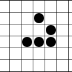

staring into the singularity: a reflection
INTRO
With my limited knowledge of science, engineering, mathematics and statistics, I want to think about the singularity. Why do I want to think about it? Because I think that thinking about the Singularity, and ways of reaching the singularity, or discussing if the singularity is possible, allows us to dissect ourselves and the way we have constructed reality. The singularity requires the construction of general intelligence, but what is intelligence and what does it tell us about the nature of our reality? These are the ideas that I always want to think about, and in my opinion inform my decision making in various unobvious ways. Anyways now to the singularity.
I'm reading "staring into the singularity" from a blog post by Eliezer Yudkowsky, a self taught American computer scientist and researcher. I found this blog post here:
the staring into the singularityTHE SHORT VERSION
"If computing power doubles every two years, what happens when computers are doing the research?
Computing power doubles every two years.
Computing power doubles every two years of work.
Computing power doubles every two subjective years of work.
Two years after computers reach human equivalence, their power doubles again. *One* year later, their speed doubles again.
Six months - three months - 1.5 months ... Singularity.
It's expected in 2035. (Oops, make that 2025.)"
What does “subjective” years of work mean?
I think that when we have adaptive, intelligent systems such as ourselves, that we evolved for survival and moving
physically first. Movement, walking, ways to acquire food, ways to digest food. And once we “figured out” a way to
do these thing, we have some "free energy" in our system to be used to further make ourselves more efficient and
“surviving”. This is purely speculative, I could go into more detail and research to back my hypothesis (on free energy)
but I will leave that for another time. What I'm trying to get at here is that as a system, I believe we have
exhausted our physical efficiency. When we are the most efficient at acquiring food, water and shelter, what's
next? I believe it is our conceptual world. We have complex abstractions of the physical world that inform our
way of life. For example, we all have shelter, so now we can have different aesthetics and organizations of
houses that can be looked at from a cultural or social standpoint, these are the abstractions of something physical,
that purely exist in a subjective space.
What is this subjective space? I think its what we call subjective intelligence. I don't believe there is any concrete theory or definition of intelligence from what I have read so far, but I have developed one. I believe intelligence to be the ability for a system to classify data (inputs) into binary categories without the indication of what the two groups are, but are choosen based on survival. I will go more into detail about this at some other time.
I'm also not entirely sure I understand what an entity that is more subjective than me looks like. What will that system that is more intelligent and subjective than me think about the world, or relationships, or anything really. What will it be incentivized to think about?
THE END OF HISTORY
Here are graphs based on the writing. The idea is that it should be like exponential decay over time, or something similar to that. Like the time it takes to move to the next stage, is halved. Again its not exactly like that but I like looking at graphs


"someone will come up with a method of increasing the maximum intelligence on the planet either coding a true Artificial Intelligence or enhancing human intelligence. An enhanced human would be better at thinking up ways of enhancing humans; he would have an 'increased capacity for invention'”
For some reason this feels wrong. I think humans right now are relatively intelligent but I don't see how we have used our intelligence to make intelligence just for the sake of making more intelligent systems. Something tells me that we should have made it already, because I think we are already pretty intelligent. I think we need some evolutionary incentive to produce more intellegnce.
Also if I use my definition of intelligence (binary classification) then I see that there is an extremely large number of ways to classify the data we get, but there is a finite limit unless we increase the levels of abstraction. For example, take houses. Maybe in our early stages of evolution you either had shelter or no shelter. But now we have various different types of structures. They are ordered and they have a social and even cultural connotations. We are more intelligent than our ancestors during that time. But can we predict the next level of abstraction? I'm not sure about that. Is there an upper limit to the number of abstractions? I'm not sure either. Maybe we won't even be able to understand a machine or human that has more levels of abstractions then us.
Another question is how can we learn how abstractions are created. I think this might be a consequence of "free energy" in a system but I have no proof of this yet. So maybe the next level of abstractions is the ability for a system to make more efficient better abstractions? For some reason I feel like I'm talking in circles here.
"And what will that doubly enhanced intelligence do? Research methods on triply enhanced humans, or build AI - Artificially Intelligent - assistants or even independent AI researchers who operate at computer speeds. And an AI researcher would be able to reprogram itself, directly, to operate even faster - and better still, smarter. And then our crystal ball explodes, everything we know is out the window, Life As We Know It is over, the "old models break down and new ones must be applied". Hence the phrase: Singularity.”
“Artificial Intelligence - if we can create programs that can match our intelligence, they shall shortly thereafter exceed us in speed if not in ability, because computers are currently increasing in speed by 55% per year. Even a mildly "intelligent" program, with the ability to notice some meaning in text, could greatly increase the rate of scientific progress by making knowledge more accessible. We could bootstrap our way to the Singularity via the relatively mild enhanced humans produced by Algernon's Law. Something completely unanticipated could occur, such as this decade's invention of the Scanning Tunnelling Probe, which advanced the nanotechnology timetable by about ten years.”
I am really curious about this because if I create a systems like myself, I don't have confidence it would do anything lol. Probably because I
am not smart and don't do much. I'm curious on why people think that if they create a human type system that it will greatly increase the
intelligence of the world. Maybe they think that we can control it and incentivize become more intelligent and create a better world, but I
have a feeling we wont be able to do that. We still have to remember that we are human, that we exist in this environment the way we are so
that we can survive in the world, no other reason. What would be the environment of the intelligent being. I feel like we are starting to
create AGI from a level of abstraction that we are currently at, and forget that we are only at this level of abstraction because we have
survived the early levels of evolution. It feels like we are starting this stage from the middle, but if we give the system “incentive” we
can allow it to evolve similar to us.
This reminds me of the Newtons and his theory of gravitation. When I was in highschool and I learned Newtons laws of gravition, I thought it was
so dumb that he didn't think of why, like Einstein. So things fall to the ground, and he quantified that. How fast does it fall, were does it fall, etc.
But Einstein asked why is it falling in the first place. Similar to that. Darwin came out with the theory of evolution and the idea of natural selection.
He sort of quantified it or rather observed it. But he never asked the question of why. Why are things changing for the better? What propels a system
to change in general and why, sometimes, does the change produce something good. I think there are some theories out there like genetic mutaions, evolutionary algorithms,
and randomness. But I think that's the question we should be asking now.
I just thought of another idea : the idea of "incentive". I think that biological systems have “incentive” as in they just have survived.
Now I think that neural networks have an "incentive" too, and that's back propagation. Maybe that's not what we have in our neural
networks in our brain but maybe that is an “incentive”. Just a thought.
“ the Singularity is inevitable.”
I still have this almost poetic notion that this is what all systems are “programmed” or “incentivized” to reach as a consequence of the physical world. Like if I take a lizard and put him in an ideal environment with predator, prey food etc., that generations from now it will evolved into an intelligent being. I don’t know how long it will take but I think it will happen at some point.
“Universe is filled with stable things”
“Some terminology, due to Vinge's Hugo-winning A Fire The Deep:
Power - an entity from beyond the Singularity.
Transcend Transcended, Transcendence - The act of reprogramming oneself to be smarter, reprogramming (with one's new intelligence) to be smarter still, and so on *ad Singularitum.* Also the metaphorical area where the Powers live, or belonging to that area.
Beyond - The grey area between being human and being a Power; the domain inhabited by entities smarter than human, but not possessing the technology to reprogram themselves directly and Transcend.”
I am interested in the terminology here. The way of thinking of a being more intelligent than humans. Why is it thought of as “beyond” us. Would we then be “beyond” compared to our ancestors way back when? I don’t know, but it feels alienating.
THE BEYONDNESS OF THE SINGULARITY
“ Computer speeds don't double due to some inexorable physical law, but because researchers and engineers find ways to make them faster. If some of the researchers and engineers are computers…”
Again, I think its a characteristic of a system to become better over time.
“What if the quality of thought was enhanced?”
Here he is saying, maybe it’s not just the speed that is enhanced by maybe the quality of the abstractions?
“ Shouldn't this improve if, say, the total sum of human scientific knowledge is stored in predigested, cognitive, ready-to-think format? Shouldn't this improve with short-term memories capable of holding the whole of human knowledge? A human-equivalent AI isn't merely "equivalent" - if Kasparov had had even the smallest, meanest automatic chess-playing program integrated solidly with his intuitions, he would have beat Deep Blue into a pulp. That's The AI Advantage: Simple tasks carried out at blinding speeds and without error, conscious tasks carried out with perfect memory and total self-awareness.”
If you think about science today, it’s just models of how we think the universe works. There were times where good questions were asked and then there was a paradigm shift in our thinking, in which we asked new questions that our old frameworks simply couldn’t address. Like Einstein asking if there was an object moving in empty space how would we know it was moving, and thus came the idea of relativity. Do we get these paradigm shifts because we have all the data and all the ideas? How do we ask questions that are not even in the realm of the framework we have at hand? I do not think that an AI with all the information about physics can generate a new type of physics. But maybe if you give a good AI that is capable of novel thinking all of the understanding of physics, that they can make new frameworks and ideas.
“Transcended doubling *might* run up against the laws of physics before reaching infinity... but even the laws of physics *as now understood* would allow one milligram (more or less) to store and run the entire human race at a million subjective years per second. (Without even using quantum computing.)”
Will the singularity be limited by hardware? Will the singularity be limited by science? Will the singularity be limited by entropy? I don’t really know what that last question means, “limited by entropy”.
“Let's take a deep breath and think about that for a moment. One milligram. The entire human race. One million years per second. That means, using only this planet for computing power, it would be possible to support more people than the entire Universe could support if we colonized every single planet. It means that, in a single day, this civilization would have lived over 80 billion years, several times older than the age of the Universe to date.”
Again, I think we are missing something. I think that all adaptable systems have some incentive as a concequence of evoultion. I don't know what that is or how it translates to making AGI but I think it's needed and missing.
“The sequence produced by iterating T(n), S{n } = T(S{n- 1}), is constant for very low values of n. S{0} is defined to be 0; a program of length zero produces no output. This corresponds to a Universe empty of intelligence. T(1) = 1. This corresponds to an intelligence not capable of enhancing itself; this corresponds to where we are now. T(2) = 3. Here begins the leap into the Abyss. Once this function increases at all, it immediately tapdances off the brink of the knowable. T(3) = 6? T(6) = 64?”
Sometimes I question intelligence as a concept itself. Maybe intelligence is an abstraction that only exists in our level of system. As we get to be more intelligent, its no longer called “intelligence” but something more. If my definition of intelligence from before is the ability for a system to classify data into binary categories, maybe the next level of “intelligence” is something completely different. I have another theory on how to order systems based on their level of “intelligence” or difference, but I need to flesh it out better later on.
“T(64) = vastly more than 1080, the number of atoms in the Universe. T(10^80) is something that only a Transcendent entity is ever going to be able to calculate, and that only if Transcendent entities can create new Universes to supply the necessary computing power. I would venture to guess that even T(64) will never be known to any strictly human being.”
This, I think is a combinatorial problem. Large combinatorial objects (like the weather) are almost impossible to calculate. But I don’t know if calculating a combinatorial object implies intelligence. Think of a calculator, not necessarily intelligent, but can do some more calculations than me. But I guess he is about an intelligent system that can make a tool that can do calculations like that, predict the future etc.
I have this theory about this. We use statistics as a classification of noise (or data). Statistics is just a classification as a consequence of chaos theory of large amounts of data as a result of small changes in the physical worlds. Maybe our concepts of intelligence is just a consequence of this as well. I am still struggling with putting together ideas of intelligence and combinatorically large objects, but I think they are connected.
THE DEFINITION OF SMARTER
“Smartness is the measure of what you see as obvious, what you can see as obvious in retrospect, what you can invent, and what you can comprehend. To be a bit more precise about it, smartness is the measure of your semantic primitives (what is simple in retrospect), the way in which you manipulate the semantic primitives (what is obvious), the way your semantic primitives can fit together (what you can comprehend), and the way you can manipulate those structures (what you can invent). If you speak complexity theory, the difference between obvious and obvious in retrospect, or inventible and comprehensible, is somewhat like the difference between NP and P.”
To go a bit further, “smartness” is a measure of confidence in categorizing physical things into conceptual groups. I can confidently say this is a table or a chair. That is information and pulling out the binary classifications and feeling confident about them is “smartness”. But this is more or less what he is saying with respect to semantic primitives.
“Different humans may have different degrees of the ability to manipulate and structure symbols; different humans may see and invent different things. The great breakthroughs of physics and engineering did not occur because a group of people plodded and plodded and plodded for generations until they found an explanation so complex, a string of ideas so long, that only time could invent it. Relativity and quantum physics and buckyballs and object-oriented programming all happened because someone put together a short, simple, elegant semantic structure in a way that nobody had ever thought of before. That is being a little bit smarter; that's where revolutions come from. Not time. Not hard work; although hard work was usually necessary, others had worked far harder without result. Raw smartness.”
“someone put together a short, simple, elegant semantic structure in a way that nobody had ever thought of before”
This is interesting, I actually think its more like you get a simple idea and its actionable and applicable right way. I have many many ideas, although I haven’t put much of it into practice I’d like to imagine that maybe one idea might work. But I think it works more like an evolutionary algorithm. Many people have ideas and the only ones that “survive” conceptually is because of how applicable and actionable they are. I actually don’t know what that means yet, but I think that short and simple and elegant is a by product of something more.
“Why does anything exist at all? Nobody knows. And yet the answer is obvious. The First Cause must be obvious. It has to be obvious to Nothing, present in the absence of anything else, formed from -blank-. What is it that evokes conscious experience, the stuff that souls are made of? We are made of conscious experiences. There is nothing we experience more directly. How does it work? We don't have a clue. Two and a half millennia of trying to solve it and nothing to show for it but "I think therefore I am." The solutions operate outside the semantic primitives and the semantic structures we can use. Our descendants, successors, future selves will figure out the semantic primitives necessary and alter themselves to perceive them. The Powers will dissect the Universe and the Reality until they understand why anything exists at all, neurons until they understand qualia. And that will only be the beginning. It won't end there. Why should there be only three hard problems? After all, if not for humans, the Universe would apparently contain only one or two hard problems - how could a non-conscious thinker formulate the hard problem of consciousness? Might there be states of existence beyond mere consciousness - transsentience? That's what the Singularity is all about.”
It’s really interesting to talk about something that might not even be in the conceptual landscape of what we we know now. We can think of physics
as a particles in space but that might not even be in the realm of reality, just a model for use to base our understanding of the world on.
Maybe our concept of time doesn’t exist and its just a way to help us conceive of our reality.
An interesting question might be, do we need an accurate representation of our environment to understand it? To create intelligence?
“I would bet on all of these terms becoming obsolete after the Singularity. There are better ways and I'm sure They - or It, or [sound of exploding brain] will "find them".”
This is exactly what I’m saying.
“ A Perceptual Transcend occurs when all things that were comprehensible become obvious in retrospect, and all things that were inventible become obvious. A Perceptual Transcend occurs when the semantic structures of one generation become the semantic primitives of the next. … The way computers manipulate numbers is actually less powerful than the way we manipulate numbers.”
I think this idea that something goes from novel to obvious is an intrinsic component of intelligent systems. I also think that our brain has a way of making something “obvious” and I think that once something becomes “obvious” there is more energy being put in the system than used up. and we want to minimize the amount of free energy (I do not know why yet). So (even just physically) it just so happens that the extra energy is used to make more patterns from our already “known” repertoire of things.
I think adaptability and understanding is a huge part of what differentiates us from calculators. I actually had this idea that binary classification from my corporate job. You might think binary classification is easy, but really you need a good incentive for it. Here is an anecdote. During work, I faced a lot of repetitive tasks. It was the same overall goal, to load data into the database, but the datasets themselves were nuanced, so there was still copious amount of manual work to do. I was early in my career,had lots of energy and was able to identify commonalities between datasets. For instance we had to write some PL/SQL code to load it into the database. I was able to automate the writing of the load procedure using a script. I basically was able to take the data and categorize them, understand one thing they all had in common, and automated that part, so at least I won’t have to type it all every single time. I made a efficient tool with all the extra energy I had for work. Obviously, I could have used my energy in entropy, wasted it on mindlessly scrolling on my phone, which I did a lot. But when you are obligated, or are in the environment in which you have to do the same work for a long period of time, you have to use your energy to catch these classifications. Why didn’t other people do this? Maybe they had other priorities, but I think the main reason resulted from something that happened personal to me. It’s a personal story about my childhood and how I was almost conditioned to see boarders, to really question and understand commonalities. If I look at it from an evolutionary standpoint, I needed to question and dissect everything as a child to simply survive and make sense of my world. In other words, its just the unique conditions of my environment and the type of system I am, that I was intelligent and able to see those patterns.
I think about if every system has some ideal environment that will make them intelligent or specifically to make tools or frameworks that categorizes things. Like a calculator, if I put it in a different conceptual environment for long enough will it become intelligent? I don’t know. I also wanted to add that after thinking about this at work, I read Shannon’s graduate thesis: A Symbolic Analysis of Relay and Switching Circuits. His findings seems so obvious, he made a framework that connects relays to binary. Its just so satisfying to read something like that. And it further confirmed my hypotheses, that the ability to do binary classification increases efficiency.
I also think there is an indefinite amount binary classifications you can make. So how do you know you have the right one? There is no right one. There is one classification that will help you and will help you survive. That's the one that's important and survives. I'm rambling but I need to flesh out this theory in more detail later on.
“At this point, one could say that a Perceptual Transcend depends on what level you're looking at the operation. If you view yourself as carrying out the operation pixel by pixel, it is an unimaginably tedious cognitive structure, but if you view the whole thing in a single lump, it is a cognitive primitive - a point made in Hofstadter's Ant Fugue when discussing ants and colonies. Not very exciting unless it's Hofstadter explaining it, but there's more to the visual cortex than that.”
This is the idea of how we group things together. If I look at everything pixel by pixel or atom by atom it would simply be too much information for me to handle. But I can group things together and call it a table. I have another theory about this. And I call this theory the “smaller than the sum of its parts” theory.
I got this idea when I looked at a spinning top I made. It was made from my chemistry kit, and I put the various bonds and atoms together and put it on my desk as something to fiddle with. So the top, at some point became itself and not a bunch of small parts, but why? I think time has something to do with it. The more it sat on my desk the more I associated it with being a top than a chemistry set. So the theory is, that it takes less energy to save the concept of a top rather than what it actually is. Does less energy mean less information? I’m not sure actually. But when I came up with this idea a while ago, I though it reduced information. This is like data compression maybe.
Anyways, the real relationship between the whole, the top, the ant colony, the big picture and the parts that make them, the chemistry parts, the ants, the neurons, is largely unknown.
Haha this reminds me of post modernism. Have you seen those people make a table with things that are not a table. Or René Magritte's The Treachery of Images. They are asking similar questions. What makes something, something? How it looks, how it feels? Its utility? Somehow this is hidden in our neural networks, is it something that we can articulate with words? I don’t know yet.

“For one thing, we consciously experience redness. (If you're not sure what "conscious experience" a.k.a. "qualia" means, the short version is that you are not the one who speaks your thoughts, you are the one who hears your thoughts.) Qualia are the stuff making up the indescribable difference between red and green.”
Qualia is a huge thing that I thought about in university. I had to read Epiphenomenal Qualia by Jackson. If I and another person both look at the color red and have the exact same neural pathways of red would we both experience the same quality of red when we see it?
(reminder to look into color blindness, the amount of information in the eyes of a color blind person is not enough to see the actual quality of the different colors)
"The term "semantic primitive" describes more than just the level at which symbols are discrete, compact objects. It describes the level of conscious perception. Unlike the computer manipulating numbers formed of bits, and like the imagined Power manipulating theorems formed of numbers, we don't lose any resolution in passing from the pixel level to the picture level. We don't suddenly perceive the idea "there is a bear in front of me", we see a picture of a bear, containing millions of pixels, every one of which is consciously experienced simultaneously. A Perceptual Transcend isn't "just" the imposition of a new cognitive level; it turns the cognitive structures into consciously experienced primitives."
I wonder if we develop another level of awareness or abstraction after we develop the abstraction itself. For example when the word “table” was created was the definition of table established. No I don’t think so, but when we created the definition of table, we established another level of abstraction, something we might not be conscious of yet. So these things, like the top or the word appear naturally and I believe a consequence of the system. So this “Power” or next level of intelligence will be conscious of what we might not be aware of, and that’s scary but cool.
GREAT BIG NUMBERS
“It's hard to appreciate the Singularity properly without first appreciating really large numbers. I'm not talking about little tiny numbers, barely distinguishable from zero, like the number of atoms in the Universe or the number of years it would take a monkey to duplicate the works of Shakespeare. I invite you to consider what was, circa 1977, the largest number ever to be used in a serious mathematical proof. The proof, by Ronald L. Graham, is an upper bound to a certain question of Ramsey theory. In order to explain the proof, one must introduce a new notation, due to Donald E. Knuth in the article Coping With Finiteness. The notation is usually a small arrow, pointing upwards, here abbreviated as ^.”
I appreciate humor in writing.
“Graham's number is far beyond my ability to grasp. I can describe it, but I cannot properly appreciate it. (Perhaps Graham can appreciate it, having written a mathematical proof that uses it.) This number is far larger than most people's conception of infinity. I know that it was larger than mine. My sense of awe when I first encountered this number was beyond words. It was the sense of looking upon something so much larger than the world inside my head that my conception of the Universe was shattered and rebuilt to fit. It felt as I imagine a mountain looks to people who don't appreciate nuclear weapons: something forever beyond us to subdue. All theologians should face a number like that, so they can properly appreciate God. My happiness was completed when I learned that the actual answer to the Ramsey problem that gave birth to that number - rather than the upper bound - was probably six. Why was all of this necessary, mathematical aesthetics aside? Because until you understand the hollowness of the words "infinity", "large" and "transhuman", you cannot appreciate the Singularity. You must know that even appreciating the Singularity is as far beyond us as visualizing that number is to a chimpanzee. Farther beyond us than that. No human analogies will ever be able to describe the Singularity, because we are only human.”
I don’t really know what the Ramsey theory is but I want to know. The idea of something so big you can’t even imagine it is interesting.
SMARTER THAN WE ARE
“But you can't write a character with a higher level of emotional maturity, a character who can spot the obvious solution you missed, a character who knows (and can tell the reader) the Meaning Of Life, a character with superhuman self-awareness. Not unless you can do these things yourself”
“A real enhanced human would realize that any simple intelligence enhancement will be a net evolutionary disadvantage - if enhancing intelligence were a matter of a simple surgical procedure, it would have long ago occurred as a natural mutation. (This goes double for a procedure that works on rats!) As far as I know, this never occurred to Keyes. (I selected Flowers, out of all the famous stories of intelligence enhancement, because, for reasons of dramatic unity, this story shows what happens to be the correct outcome.)”
“my explanation is two sentences long and can be understood by someone who isn't an expert in the field. That's the difference between a fictional genius and an actual enhanced human such as myself. I wouldn't have been taken by surprise, and for that matter I wouldn't have been that dramatically upset if I had. Normal author no enhancement, real enhancement no story.”
I’m not saying that the author has ego, I understand that these are his real thoughts, but I also questioned the role ego plays in life. What percentage of your life is attributed to ego or even simply feeling confident. I always thought confident people are always blindsided, or missing out on information about the world. And with the state of mind I have, I can never lose information, so I was never confident. It was always what if I’m wrong. And more often then not, I find myself right. There’s always this part of my mind that is like in the future you’re going to learn more and realize you were wrong. And it happens. I’m able to take things with a grain of salt but I realized that I need some confidence to progress, just to move forward. I need to be simi confident in what I’m writing right now to be able to actually right it down. But I’m still struggling with the “how much percentage” part.
”It's hard to convey what the term smarter means to someone who's never seen their own or someone else's blind spot. That is why I am the most fanatic Singularitarian on the planet; because I have some slight, infinitesimal, actual experience with how intelligence enhancement works. Because I have a visceral appreciation of how utterly, finally, absolutely impossible it is to think like someone even a little tiny bit smarter than you are. I know that we are all missing the obvious, in every day, and every way. There are no hard problems, only problems that are hard to a certain level of intelligence. Move the smallest bit upwards, and some problems will suddenly move from "impossible" to "obvious". Move a substantial degree upwards, and all of them will become obvious. Move a huge distance upwards, and Lord knows what."
It's so paradoxical, like if you have insight into this “next level” of intelligence is that even possible? Take for example a 2d world. Lets imagine a population that “lives” in a 2d world and you are a 3D being looking and observing their world. They, like us can grow change and learn. They can also evolve. They have figured out how forces work and how to move across a pixelated screen. But the question is will they even make tools to understand our 3D world? Will they every truly understand how a pixel works? How the CPU that is running their calculations work? Will they understand us? Can they even think about the possibility of us? I don’t know but that's what this sound like to me. Can we even think about them? Well we are thinking about them right now. But are we really? or are we still thinking about a thing that can exist in our world how we see it? Well we are thinking about that to since it was just mentioned. But are we really? And so on… forever. Its paradoxical and infinite and frankly I get caught up in it a lot.
“And I know that my picture of the Singularity will still fall short of the truth. I may not be modest, but I have humility - if I can spot anthropomorphisms and gaping logical flaws in every alleged transhuman in every piece of science fiction novel, it follows that a slightly higher-order Specialist (much less a real transhuman!) could read this page and laugh at my lack of imagination. Call it experience, call it humility, call it self-awareness, call it the Principle of Mediocrity. I know, in a dim way, just how dumb I am.”
Sometimes I think I should just read the whole article first and then right about it. But I can’t contain the things I am thinking during reading so I am doing this practice. But I am still caught in a loop. Is “anthropomorphisms” also a anthropomorphisms? I think so. And if it truly is, I believe we are stuck here and cannot go further.
“ Take whatever emotion this page evoked, and associate it not with the Singularity; associate it with me, the mild, quiet-spoken fellow infinitesimally different from the rest of humanity. Don't bother trying to extrapolate beyond that. You can't. Nobody can - not you, not me.”
SOONER THAT YOU THINK
“We don't lack the technology; the Singularity could happen tomorrow. The Internet has enough power, if properly reprogrammed, to run a human brain, and perhaps a smaller computer has enough power to run a seed AI. We possess machines capable of producing arbitrary DNA sequences. We have bacteria capable of turning DNA into protein. 100K of information from the future could specify a protein that built a device that would give us nanotechnology overnight. 100K could contain the code for a seed AI. We don't have to receive that information from the future, either. One breakthrough - just one major insight - in the science of protein engineering or atomic manipulation or Artificial Intelligence, one really good day at Cycorp or Zyvex, and the books of history close. That could happen at any time. There is a major breakthrough in some scientific field once per day, and that statistic is from years ago.”
Yea its like the way we measure things is also progressing, so the most closer we get to the finish line the better our predictions are going to be
UPLOADING
“You are not a human. You are an intelligence which, at present, happens to have a mind unfortunately limited to human hardware. That could change. With any luck, all persons on this planet who live to 2035 or 2005 or next year or whenever - and maybe some who don't - are going to wind up as Powers.”
This is like the “smaller than the sum of your parts” theory. In a sense, you, a human (maybe) are smaller than the sum of your parts, your hardware. Maybe that's the feeling we feel, our consciousness. Our consciousness could just be that thing that is smaller than the physical world. Maybe its to conserve energy or information.
“Transferring a human mind into a computer system is known as "uploading"; turning a mortal into a Power is known as "upgrading". The prototypical upload is the Moravec Transfer, proposed by Dr. Hans Moravec in the book Mind Children. The Moravec Transfer gradually moves (rather than copies) a human mind into a computer. You need never lose consciousness. The key assumption of the Moravec Transfer is that we can perfectly simulate a single neuron, which Penrose & Hameroff would argue is untrue. Let's assume that either the laws of physics are computational or we can build a trans-Turing computer that does the same thing a neuron does, to which P&H would have no objection. Note that the details which follow have been redesigned and fleshed out a bit (by yours truly) from the original in Mind Children. A neuron-sized robot swims up to a neuron and scans it into memory. The computer starts simulating the neuron. The robot waits until the neuron perfectly matches its simulation inside the computer, and then replaces the neuron with itself as smoothly as possible, sending inputs to the computer and transmitting outputs from the simulation of a neuron inside the computer. This entire procedure has had no effect on the flow of information in the brain, except that one neuron's worth of processing is now being done inside a computer instead of a neuron. Repeat, neuron by neuron, until the entire brain is composed of robot neurons whose guts are inside the computer.”
This is a classic idea I think, and the question always is, is that person you? How can you define consciousness in that space?
“whether one's true self would be diluted by Transcendence.”
Are we our vices and hedonistic desires? I mean that's probably part of it. I think that's why there is a push to get a away from that. Like currently Generation Z is push for people to do things for intrinsic motivation rather than external. I always never understood why people did things. Why did you want to be a doctor? Why did you choose your profession? Never understood it ever. But I realized there is always an external factor. It could be “I need to survive physically” or “I want to impress people with my profession”. But sometimes its “I like it” but I feel like it should be “I can bring things that are different to the table, I can make this better” etc. I always felt like you could edit the reason you did things. Like I do this to look cool and change it to I genuinely like the thing I do. I don’t think it can be ever 100% internal. Then everything would die out. But when you do things for an intrinsic motivation you are creating your own level of abstraction in the thing that you are doing, and I think that can be highly beneficial to the task itself. Do you want to be a painter just because you like the idea of being a painter or do you really see things and techniques of painting that other people don’t. Or do you believe that with enough time that you could. What’s interesting about doing something if you can’t make it better? I think that’s why there is this weird push for people to do what you really want to do, think about yourself deeply, because when you do that, you can really take the thing that you are doing to the next level and that's beneficial for humanity as a whole.
This is such a side note but for some reason I am thinking about cellular automata. Bare with me its a jump, but I remember reading the introduction in the Minds I. In the introduction Dennett writes about the classic example of the teleporter and how someone steps in teleporter and it makes a copy of itself back to Earth from Mars. Is that person back in earth really you? I think the immediate answer is no! There was a moment when there were two of you, one on mars and one on earth. Even if you kill the person on Mars that was you. Now, I remember learning about cellular automata, and Conway’s game of life. I am reminded of the glider:
I always felt like we were anthropomorphizing this little guy. See, did it again. But this here is not one entity moving across the screen. It is a bunch of little things grouped together and by time and space are linked so I see this object as a whole. But in reality it is just a bunch of pixels changing color based on a rule. And I think that's what we are too. It might sound off putting to think of humans that way, but I believe we are deeply connected and embedded into space and time. If I copy the glider into another space or another section of the plane, its a different group of smaller things. Its not the same thing as before, therefore it is not the same. Same thing applies to me. If you copy me cell by cell and put “me” somewhere else. It is not me per say, and the other me will be affected by their unique environments and time and space. If you put that me in another universe identical to this one, then I think you will get two people who are going to do the same thing, not one person. Anyways, if were then to “upload” me to a cloud, it will not be me but maybe a model of me, which will be cool.
THE INTERIM MEANING OF LIFE
“Have you ever pondered the Great Questions of Life, the Universe, and Everything? Have you ever wondered whether it really matters, cosmically speaking, if you stay in bed this morning? Have you ever stared into the hard problem of ethics, or consciousness, or reality, and felt yourself slowly going insane as you realized that there is no justification for subjective experience, getting out of bed, or anything existing at all? How can we do anything, set any goals, without knowing the Meaning of Life? How can we justify our continued participation in the rat race if we don't know why we're running? What's it all for?
We don't know. We have to guess, and act on our best guesses. Regardless of the absolute probabilities, superintelligence has a better chance of discovering the true moral right, having the power to implement it, and wanting to implement it. The state where superintelligence exists is, with a very high degree of probability regardless of the True Meaning of Life, preferable to the current state. That's the Interim Meaning of Life, and it works well enough... but it's a long, long way from certainty, or really knowing what's going on!”
It’s a really scary idea, but I don’t know if moral right exists without us. Without us, in the animal kingdom there is rape and murder and various other vicious violent acts that animals partake in. I first learned about what penguins do and it’s wild. I think morality and beliefs in general are a consequence of physics really. To put it more simpler, I think the reason we have belief systems and meaning is a consequence of physics and to combat entropy. I have through about why get out of bed, why do the dishes and the thing that’s currently allowed me to do those things is our opposition to entropy. When I was a kid, there was a moment when I stopped trying. I never brushed my hair or made my bed. I couldn’t understand why. It’s almost as if I like to watch things decay. Later on I realized that we are systems. We put energy in our systems to avoid entropy and sometimes our system takes in more energy than needed. Without expending much energy, we can get food, water and shelter. What else do we need, I thought. Nothing. So I sat there. But there comes a point where if you take in energy you need to expend it in some way. Ordering your house make sure that it won’t get damaged. Ordering your hair or your thoughts require energy. And we must order things all the time. Just as a consequence of a system. That’s why we create companies and read neatly packaged books. What you should order is the question you have to ask yourself. I think it’s a better question than what you want your job to be or what you like to do. What can you see being ordered that is not yet ordered. Evolution greatly favors people who are ordered. This idea is still in its baby steps of being expressed. I think this is the first time I actually wrote it down.
Meaning is another thing. It ties back to the “smaller than the sum of its parts” idea. Meaning and belief are two things that are smaller than the actual thing at hand. But what is it? I still do not know.
GETTING TO THE SINGULARITY
“Hofstadter, Quate, Penrose, Chalmers, Drexler, Lenat, Moravec, Minsky”
“Plan to make a profit. Bootstrap your way to the Singularity instead of begging for spare change. Ask for venture capital and have something specific in mind. There's a lot of money to be made in AI. Even a little bit of semantics in a computer can result in huge increases in usability and power.”
“Our sole responsibility is to produce something smarter than we are; any problems beyond that are not ours to solve.”
REFLECTIONS FROM ME:
We are no longer learning by reading we are learning by thinking.
I never really completed a full reading, or at least that's what it feels like. Also I don't see the benefit in reading something word for word.
Even when I am reading it i don't remember everything word for word so why should I read everything. Instead, I think about the way I learned in
school and how I would just think about that idea for long periods of time in my head. Something that might be easier to explain is how I learned
various topics in physics. I would imagine myself as the rock being thrown off the cliff. I would imagine the forces on me. It was so easy to imagine
and then I would develop the formulas and solve the problem. Same with calculus if I imagined the subsection of the graph being filled in, I could
created my integrals accordingly. It was actually easy if i imagined it. Same with biology and imagining cells. I was just pictured it in my head
rather than doing my long reading. But I would still pass. To learn something I would just imagine it in my head, multimodally, with different
types of imagining, visual, audio, writing it down (words/language) or even physical. My visions in physics were not just visual i really felt
the force of gravity on the way down or the horizonal force. It even helped me imagine Einstein's gravitational theory and so on. I feel like
others would disagree with me. They think I read a lot and know a lot. but I don't believe i do. I think this is this only real piece of writing
I have read in a while. And I was only able to do so because I am writing everything that is coming through my head while I read it. So from now,
even when I am reading a book, I will write down everything that comes to my head. so i can read it. I think the next generation of people,
Generation Z is doing the same thing as me.
ABOUT THE SINGULARITY
I have this idea that everything requires incentive, even the way we evolved. For example there was an incentive in evolution or environment that incentivized us to have arms, or digest the food the way we do. I think the algorithm underlying the start of the singularity must arise out of necessity, and incentive. What can create that kind of incentive? For example, wars were a big incentive to create computers. but even on a smaller scale, the incentive must be there.
People forget that we are still biological humans and the we are still evolving. Maybe the reason children go out and make decisions that our parents would never make is simply because we are evolving